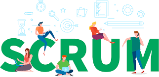
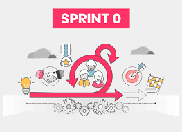
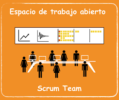
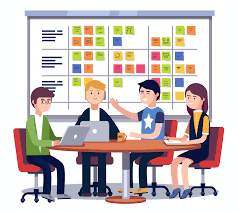
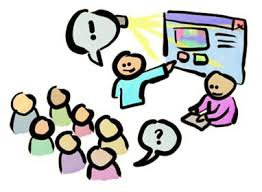

Metodologías Scrum
Conceptualización
Es otra metodología ágil, la palabra scrum proviene de una posición en el rugby, donde los equipos forman un grupo y pelean la posesión de la pelota. Scrum se refiere al trabajo en equipo de los desarrolladores del sistema y deben tener en cuenta que el éxito del proyecto es más importante que el éxito individual.la persona encargada de la gestion del proyecto tiene un poco de influencia sobre los detalles del sistema que desarrolla; ya que el equipo de sistemas con período de tiempo estricto, por lo general es de 30 días para el desarrollo.

Componentes de la metodología scrum
La acumulación de productos en donde se deriva una lista a partir de las especificaciones de los productos se le conoce como Backlog.
Acumulación corrida
la acumulacion corrida, es una lista que cambia en forma dinámica sobre las tareas que se van a completar en la siguiente corrida, este proceso es conocido como sprint.
corrida
Scrum diaria, es una reunion breve en donde la comunicación es la regla número 1. los miembros del equipo necesitan manifestar lo que hicieron desde la última reunión, si encontraron obstáculos y lo que planean hacer antes de la siguiente reunión de scrum diaria.
Scrum diaria
sólo lleva a cabo el diseño necesario para cumplir los requerimientos actuales.
Demo
Se realiza una demo, el cual es un software funcional que se puede demostrar al cliente
por todo la anterior, scrum es una metodología de alta intensidad, y es solo una de las filosofías que el modelo ágil adopta.